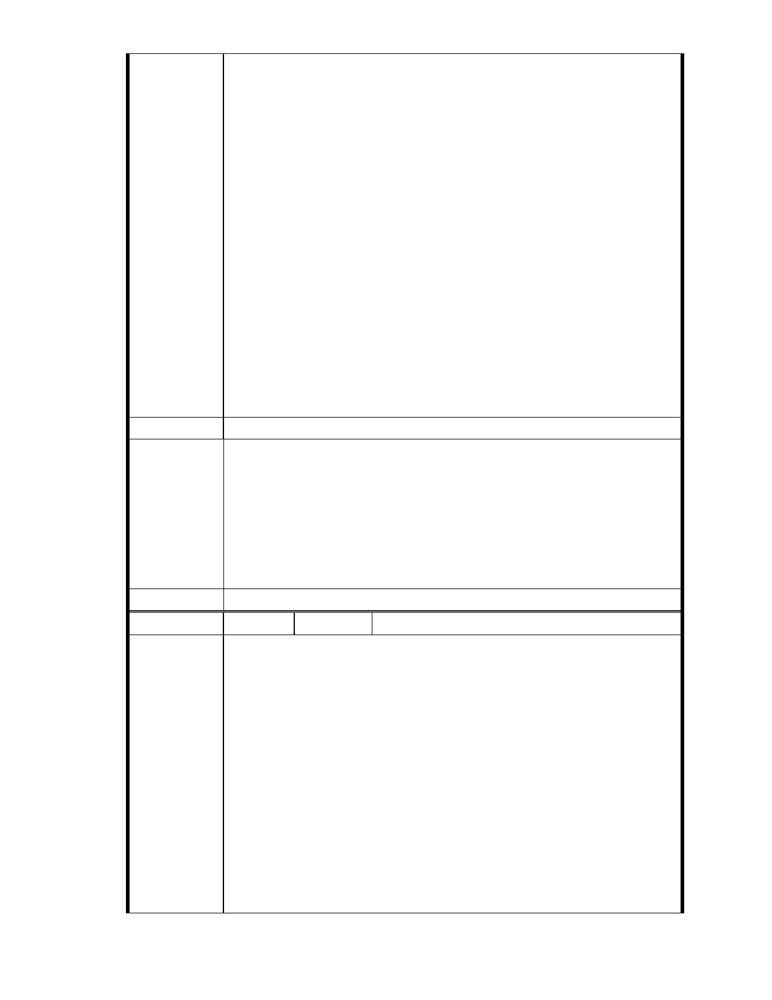

沼澤第三類交通水利用地，具排水、蓄洪功能，未經水利單位許可，不
得任意廢止、更改或破壞，以免妨礙都市排水功能。
三、依據經濟部水利署 96 年 9 月 5 日經水綜字第 0951220520 號函，
「溜」地目土地須經主管機關（農田水利會及地方政府水利（務）處）
核准廢止後，始得辦理地目變更或塗銷地目。
四、依據台北市政府 87 年 1 月 16 日駁回慈濟所提出變更計劃部分理
由：「該用地於民國 69 年由大湖被填平後土質鬆軟，不適宜變更承受如
此高強度建築之開發。」並強調：「該湖泊用地於民國 62 年由七星水利
會標售給新陸開發公司時有但書：開發利用不得妨礙都市排水功能，該
用地位於山溝與湖泊交會處，水土保持功能重要，開發後將影響上游水
系排水。」，經查目前該「溜」地目土地仍具有上游水系排水蓄洪功能，
未經水利單位許可，不得任意廢止、更改或破壞，以免妨礙都市排水功
能。
五、本大廈緊鄰慈濟內湖園區，變更後之負面影響最鉅，請貴會通知本
大廈管理委員會列席參與該案後續所有審議、專案小組會議及大會，並
請依政府資訊公開法將會議時間、地點，以及會議資料、紀錄等相關資
訊提前公開上網，俾便閱覽。
建議辦法
一、本案申請範圍於慈濟購得前已遭填平破壞作汽車停車場使用，已長
年不具保護區之功能；目前申請方案較先前方案已大幅降低開發強
度、調整使用項目並承諾大面積滯洪設施等回饋事項，顯示申請單
市府說明
位欲改善現況之誠意。
二、相關陳情意見將納入本案審查人民意見，依法定程序辦理。
三、後續審理程序將要求申請人加強與在地區民、社會大眾，就基地現
況、規劃方案及環境助益作為等方面加強溝通。
委 員 會 決 議 同編號 1。
編號
陳情理由
155 陳情人 大湖內閣大廈管理委員會
發文日期：中華民國 101 年 10 月 24 日
發文字號：內慈字第 1011011 號
主旨：有關「變更臺北市內湖區成功路五段大湖公園北側部分保護區及
道路用地為社會福利特定專用區主要計畫案」，基地內有二筆「國有道
地目」既成道路土地，為既成農路自然行成，長期供當地居民通行使用，
亦為後方農地、農舍唯一進出道路，不容任意廢除。
說明
一、依據 2012 年 9 月 24 日本大廈第 16 屆第 1 次臨時管委會決議辦理。
二、經查變更範圍內有地號 135 ( 112 平方公尺）及地號 142 ( 448 平方
公尺）二筆土地，為「國有道地目」既成道路，長期供當地居民通行使
用，具公共地役權，不容任意廢除，應先依「臺北市現有巷道廢止或改
道自治條例」規定，辦理廢「巷」的行政程序辦理。
三、慈濟自民國 90 年購地以來，即逕自設門上鎖將 135 地號國有道路
- 225 -